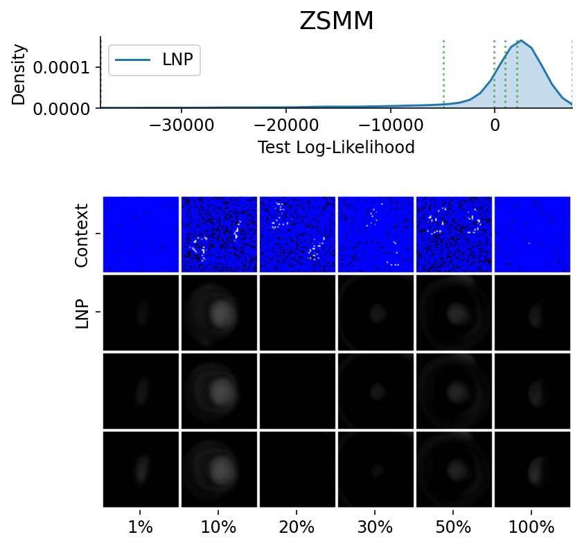
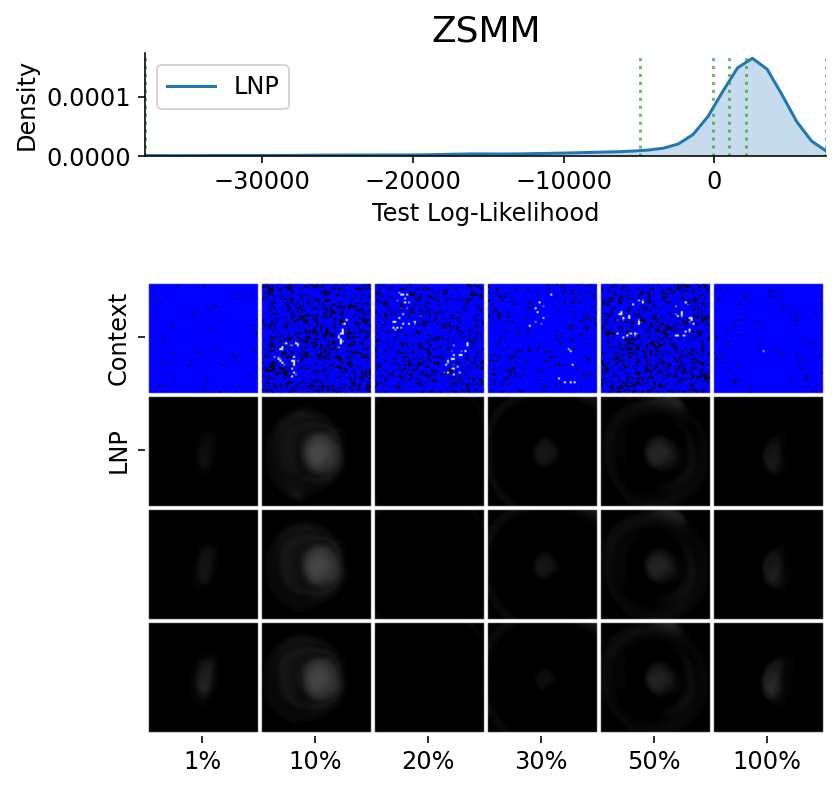

Latent Neural Process (LNP)¶

Fig. 47 Computational graph for Latent Neural Processes.¶
In this notebook we will show how to train a LNP on samples from GPs and images using our framework, as well as how to make nice visualizations of sampled from LNPs. We will follow CNP notebook but plot samples from the posterior predictive instead of posterior predictive.
%matplotlib inline
%config InlineBackend.figure_format = 'retina'
import logging
import os
import warnings
import matplotlib.pyplot as pl
import torch
os.chdir("../..")
warnings.filterwarnings("ignore")
warnings.simplefilter("ignore")
logging.disable(logging.ERROR)
N_THREADS = 8
IS_FORCE_CPU = False # Nota Bene : notebooks don't deallocate GPU memory
if IS_FORCE_CPU:
os.environ["CUDA_VISIBLE_DEVICES"] = ""
torch.set_num_threads(N_THREADS)
Initialization¶
Let’s load all the data. For more details about the data and some samples, see the data notebook.
from utils.ntbks_helpers import get_all_gp_datasets, get_img_datasets
# DATASETS
# gp
gp_datasets, gp_test_datasets, gp_valid_datasets = get_all_gp_datasets()
# image
img_datasets, img_test_datasets = get_img_datasets(["celeba32", "mnist", "zsmms"])
Now let’s define the context target splitters, which given a data point will return the context set and target set by selecting randomly selecting some points and preprocessing them so that the features are in \([-1,1]\). We use the same as in CNP notebook, namely all target points and uniformly sampling in \([0,50]\) and \([0,n\_pixels * 0.3]\) for 1D and 2D respectively.
from npf.utils.datasplit import (
CntxtTrgtGetter,
GetRandomIndcs,
GridCntxtTrgtGetter,
RandomMasker,
get_all_indcs,
no_masker,
)
from utils.data import cntxt_trgt_collate, get_test_upscale_factor
# CONTEXT TARGET SPLIT
# 1d
get_cntxt_trgt_1d = cntxt_trgt_collate(
CntxtTrgtGetter(
contexts_getter=GetRandomIndcs(a=0.0, b=50), targets_getter=get_all_indcs,
)
)
# same as in 1D but with masks (2d) rather than indices
get_cntxt_trgt_2d = cntxt_trgt_collate(
GridCntxtTrgtGetter(
context_masker=RandomMasker(a=0.0, b=0.3), target_masker=no_masker,
)
)
# for ZSMMS you need the pixels to not be in [-1,1] but [-1.75,1.75] (i.e 56 / 32) because you are extrapolating
get_cntxt_trgt_2d_extrap = cntxt_trgt_collate(
GridCntxtTrgtGetter(
context_masker=RandomMasker(a=0, b=0.3),
target_masker=no_masker,
upscale_factor=get_test_upscale_factor("zsmms"),
)
)
Let’s now define the models. We use the same architecture as in CNP notebook. The only differences are that we: replace CNP with LNP, so the representation is a latent variable from which we sample using the reparametrization trick.
Note that we will be training using the conditional ELBO and thus set is_q_zCct to infer the latent variable using BOTH the context and target set (importance sampling). This also means that when evaluating we will evaluate the log likelihood using importance sampling.
from functools import partial
from npf import LNP
from npf.architectures import MLP, merge_flat_input
from utils.helpers import count_parameters
R_DIM = 128
KWARGS = dict(
is_q_zCct=True, # will use ELBO => importance sampling
n_z_samples_train=1,
n_z_samples_test=32, # number of samples when eval
XEncoder=partial(MLP, n_hidden_layers=1, hidden_size=R_DIM),
Decoder=merge_flat_input( # MLP takes single input but we give x and R so merge them
partial(MLP, n_hidden_layers=4, hidden_size=R_DIM), is_sum_merge=True,
),
r_dim=R_DIM,
)
# 1D case
model_1d = partial(
LNP,
x_dim=1,
y_dim=1,
XYEncoder=merge_flat_input( # MLP takes single input but we give x and y so merge them
partial(MLP, n_hidden_layers=2, hidden_size=R_DIM * 2), is_sum_merge=True,
),
**KWARGS,
)
# image (2D) case
model_2d = partial(
LNP,
x_dim=2,
XYEncoder=merge_flat_input( # MLP takes single input but we give x and y so merge them
partial(MLP, n_hidden_layers=2, hidden_size=R_DIM * 3), is_sum_merge=True,
),
**KWARGS,
) # don't add y_dim yet because depends on data
n_params_1d = count_parameters(model_1d())
n_params_2d = count_parameters(model_2d(y_dim=3))
print(f"Number Parameters (1D): {n_params_1d:,d}")
print(f"Number Parameters (2D): {n_params_2d:,d}")
Number Parameters (1D): 301,634
Number Parameters (2D): 417,286
Note that there are more parameters than in CNP notebook <CNP> because need a MLP that maps the deterministic representation to a multivariate normal distribution from which we will sample \(R \to Z\).
For more details about all the possible parameters, refer to the docstrings of LNP and the base class LatentNeuralProcessFamily.
# LNP Docstring
print(LNP.__doc__)
(Latent) Neural process from [1].
Parameters
----------
x_dim : int
Dimension of features.
y_dim : int
Dimension of y values.
encoded_path : {"latent", "both"}
Which path(s) to use:
- `"latent"` the decoder gets a sample latent representation as input as in [1].
- `"both"` concatenates both the deterministic and sampled latents as input to the decoder [2].
kwargs :
Additional arguments to `ConditionalNeuralProcess` and `NeuralProcessFamily`.
References
----------
[1] Garnelo, Marta, et al. "Neural processes." arXiv preprint
arXiv:1807.01622 (2018).
[2] Kim, Hyunjik, et al. "Attentive neural processes." arXiv preprint
arXiv:1901.05761 (2019).
# NeuralProcessFamily Docstring
from npf import LatentNeuralProcessFamily
print(LatentNeuralProcessFamily.__doc__)
Base class for members of the latent neural process (sub-)family.
Parameters
----------
*args:
Positional arguments to `NeuralProcessFamily`.
encoded_path : {"latent", "both"}
Which path(s) to use:
- `"latent"` uses latent : the decoder gets a sample latent representation as input.
- `"both"` concatenates both the deterministic and sampled latents as input to the decoder.
is_q_zCct : bool, optional
Whether to infer Z using q(Z|cntxt,trgt) instead of q(Z|cntxt). This requires the loss
to perform some type of importance sampling. Only used if `encoded_path in {"latent", "both"}`.
n_z_samples_train : int or scipy.stats.rv_frozen, optional
Number of samples from the latent during training. Only used if `encoded_path in {"latent", "both"}`.
Can also be a scipy random variable , which is useful if the number of samples has to be stochastic, for
example when using `SUMOLossNPF`.
n_z_samples_test : int or scipy.stats.rv_frozen, optional
Number of samples from the latent during testing. Only used if `encoded_path in {"latent", "both"}`.
Can also be a scipy random variable , which is useful if the number of samples has to be stochastic, for
example when using `SUMOLossNPF`.
LatentEncoder : nn.Module, optional
Encoder which maps r -> z_suffstat. It should be constructed via
`LatentEncoder(r_dim, n_out)`. If `None` uses an MLP.
LatentDistribution : torch.distributions.Distribution, optional
Latent distribution. The input to the constructor are currently two values : `loc` and `scale`,
that are preprocessed by `q_z_loc_transformer` and `q_z_loc_transformer`.
q_z_loc_transformer : callable, optional
Transformation to apply to the predicted location (e.g. mean for Gaussian)
of Y_trgt.
q_z_scale_transformer : callable, optional
Transformation to apply to the predicted scale (e.g. std for Gaussian) of
Y_trgt. The default follows [3] by using a minimum of 0.1 and maximum of 1.
**kwargs:
Additional arguments to `NeuralProcessFamily`.
Training¶
The main function for training is train_models which trains a dictionary of models on a dictionary of datasets and returns all the trained models.
See its docstring for possible parameters. The only difference with CNP notebook is that we use the conditional ELBO loss ELBOLossLNPF to train the model despite the latent variables.
Computational Notes :
The following will either train all the models (
is_retrain=True) or load the pretrained models (is_retrain=False)it will use a (single) GPU if available
decrease the batch size if you don’t have enough memory
30 epochs should give you descent results for the GP datasets (instead of 100)
import skorch
from npf import ELBOLossLNPF
from utils.ntbks_helpers import add_y_dim
from utils.train import train_models
KWARGS = dict(
is_retrain=False, # whether to load precomputed model or retrain
criterion=ELBOLossLNPF, # (approx) conditional ELBO Loss
chckpnt_dirname="results/pretrained/",
device=None, # use GPU if available
batch_size=32,
lr=1e-3,
decay_lr=10, # decrease learning rate by 10 during training
seed=123,
)
# 1D
trainers_1d = train_models(
gp_datasets,
{"LNP": model_1d},
test_datasets=gp_test_datasets,
iterator_train__collate_fn=get_cntxt_trgt_1d,
iterator_valid__collate_fn=get_cntxt_trgt_1d,
max_epochs=100,
**KWARGS
)
# 2D
trainers_2d = train_models(
img_datasets,
add_y_dim({"LNP": model_2d}, img_datasets), # y_dim (channels) depend on data
test_datasets=img_test_datasets,
train_split=skorch.dataset.CVSplit(0.1), # use 10% of training for valdiation
iterator_train__collate_fn=get_cntxt_trgt_2d,
iterator_valid__collate_fn=get_cntxt_trgt_2d,
datasets_kwargs=dict(
zsmms=dict(iterator_valid__collate_fn=get_cntxt_trgt_2d_extrap,)
), # for zsmm use extrapolation
max_epochs=50,
**KWARGS
)
--- Loading RBF_Kernel/LNP/run_0 ---
RBF_Kernel/LNP/run_0 | best epoch: None | train loss: 60.4488 | valid loss: None | test log likelihood: -37.1932
--- Loading Periodic_Kernel/LNP/run_0 ---
Periodic_Kernel/LNP/run_0 | best epoch: None | train loss: 125.5136 | valid loss: None | test log likelihood: -122.6891
--- Loading Noisy_Matern_Kernel/LNP/run_0 ---
Noisy_Matern_Kernel/LNP/run_0 | best epoch: None | train loss: 120.2593 | valid loss: None | test log likelihood: -105.8851
--- Loading Variable_Matern_Kernel/LNP/run_0 ---
Variable_Matern_Kernel/LNP/run_0 | best epoch: None | train loss: -78.7534 | valid loss: None | test log likelihood: -674.3751
--- Loading All_Kernels/LNP/run_0 ---
All_Kernels/LNP/run_0 | best epoch: None | train loss: 100.7922 | valid loss: None | test log likelihood: -76.0236
--- Loading celeba32/LNP/run_0 ---
celeba32/LNP/run_0 | best epoch: 50 | train loss: -3202.3485 | valid loss: -3365.3483 | test log likelihood: 3357.6426
--- Loading mnist/LNP/run_0 ---
mnist/LNP/run_0 | best epoch: 50 | train loss: -2556.1151 | valid loss: -2690.7319 | test log likelihood: 2686.5392
--- Loading zsmms/LNP/run_0 ---
zsmms/LNP/run_0 | best epoch: 9 | train loss: -1923.4493 | valid loss: -1228.2505 | test log likelihood: 112.0439
Plots¶
Let’s visualize how well the model performs in different settings.
GPs Dataset¶
Let’s define a plotting function that we will use in this section. We’ll reuse the same function defined in CNP notebook, but will use n_samples = 20 to plot multiple posterior predictives conditioned on different latent samples.
from utils.ntbks_helpers import PRETTY_RENAMER, plot_multi_posterior_samples_1d
from utils.visualize import giffify
def multi_posterior_gp_gif(filename, trainers, datasets, seed=123, **kwargs):
giffify(
save_filename=f"jupyter/gifs/{filename}.gif",
gen_single_fig=plot_multi_posterior_samples_1d, # core plotting
sweep_parameter="n_cntxt", # param over which to sweep
sweep_values=[0, 2, 5, 7, 10, 15, 20, 30, 50, 100],
fps=1.5, # gif speed
# PLOTTING KWARGS
trainers=trainers,
datasets=datasets,
is_plot_generator=True, # plot underlying GP
is_plot_real=False, # don't plot sampled / underlying function
is_plot_std=True, # plot the predictive std
is_fill_generator_std=False, # do not fill predictive of GP
pretty_renamer=PRETTY_RENAMER, # pretiffy names of modulte + data
# Fix formatting for coherent GIF
plot_config_kwargs=dict(
set_kwargs=dict(ylim=[-3, 3]), rc={"legend.loc": "upper right"}
),
seed=seed,
**kwargs,
)
Let us visualize samples from the LNP when it is trained on samples from a single GP.
def filter_single_gp(d):
"""Select only data form single GP."""
return {k: v for k, v in d.items() if ("All" not in k) and ("Variable" not in k)}
multi_posterior_gp_gif(
"LNP_single_gp",
trainers=filter_single_gp(trainers_1d),
datasets=filter_single_gp(gp_test_datasets),
n_samples=20, # 20 samples from the latent
)

Fig. 48 Posterior predictive of LNPs conditioned on 20 different sampled latents (Blue line with shaded area for \(\mu \pm \sigma | z\)) and the oracle GP (Green line with dashes for \(\mu \pm \sigma\)) when conditioned on contexts points (Black) from an underlying function sampled from a GP. Each row corresponds to a different kernel and LNP trained on samples for the corresponding GP.¶
From Fig. 48 we see that LNPs are able to coherently sample functions from the marginal posterior predictive, by sampling different latent variable. It nevertheless suffer from the same underfitting issues as CNPs (Fig. 36).
Image Dataset¶
Let us now look at images. We again will use the same plotting function defined in CNP notebook but with n_samples = 3 to plot sampled functions from the posterior predictives.
from utils.ntbks_helpers import plot_multi_posterior_samples_imgs
from utils.visualize import giffify
def multi_posterior_imgs_gif(filename, trainers, datasets, seed=123, **kwargs):
giffify(
save_filename=f"jupyter/gifs/{filename}.gif",
gen_single_fig=plot_multi_posterior_samples_imgs, # core plotting
sweep_parameter="n_cntxt", # param over which to sweep
sweep_values=[
0,
0.005,
0.01,
0.02,
0.05,
0.1,
0.15,
0.2,
0.3,
0.5,
"hhalf", # horizontal half of the image
"vhalf", # vertival half of the image
],
fps=1.5, # gif speed
# PLOTTING KWARGS
trainers=trainers,
datasets=datasets,
n_plots=3, # images per datasets
is_plot_std=True, # plot the predictive std
pretty_renamer=PRETTY_RENAMER, # pretiffy names of modulte + data
plot_config_kwargs={"font_scale":0.7},
# Fix formatting for coherent GIF
seed=seed,
**kwargs,
)
Let us visualize the CNP when it is trained on samples from different image datasets that do not involve extrapolation.
def filter_interpolation(d):
"""Filter out zsmms which requires extrapolation."""
return {k: v for k, v in d.items() if "zsmms" not in k}
multi_posterior_imgs_gif(
"LNP_img_interp",
trainers=filter_interpolation(trainers_2d),
datasets=filter_interpolation(img_test_datasets),
n_samples=3,
)

Fig. 49 3 samples (means conditioned on different samples from the latent) of the posterior predictive of a LNP for CelebA \(32\times32\) and MNIST for different context sets. The last row shows the standard deviation of the posterior predictive corresponding to the last sample.¶
From Fig. 49 again shows underfitting but relatively coherent sampling.
Here are more samples, corresponding to specific percentiles of the test log loss.
from utils.ntbks_helpers import PRETTY_RENAMER
from utils.visualize import plot_qualitative_with_kde
n_trainers = len(trainers_2d)
for i, (k, trainer) in enumerate(trainers_2d.items()):
data_name = k.split("/")[0]
model_name = k.split("/")[1]
dataset = img_test_datasets[data_name]
plot_qualitative_with_kde(
[PRETTY_RENAMER[model_name], trainer],
dataset,
figsize=(6,6),
percentiles=[1, 10, 20, 30, 50, 100], # desired test percentile
height_ratios=[1, 6], # kde / image ratio
is_smallest_xrange=True, # rescale X axis based on percentile
h_pad=0, # padding
title=PRETTY_RENAMER[data_name],
upscale_factor=get_test_upscale_factor(data_name),
n_samples=3,
)

 
